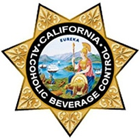

GSP 270
Geographic Information Science
Spring 2024
GSP 270
Data sources
-
IPUMS
IPUMS provides census and survey data from around the world integrated across time and space. IPUMS integration and documentation makes it easy to study change, conduct comparative research, merge information across data types, and analyze individuals within family and community contexts. Data and services available free of charge.
-
Northern California Earthquake Data Center (NCEDC)
-

California Department of Alcohol Beverage Control - License Lookup Service
Formerly known as the License Query System (LQS), the license lookup service provides information about applicants and licensed individuals and businesses that are regulated by the California Department of Alcoholic Beverage Control.
-
Natural Earth
Natural Earth is a public domain map dataset available at 1:10m, 1:50m, and 1:110 million scales. Featuring tightly integrated vector and raster data, with Natural Earth you can make a variety of visually pleasing, well-crafted maps with cartography or GIS software.
-

USGS - Earth Explorer
EarthExplorer (EE) provides online search, browse display, metadata export, and data download for earth science data from the archives of the U.S. Geological Survey (USGS). EE provides an enhanced user interface using state-of-the-art technologies for searching, viewing, and downloading data.
-
US Census
Learn about America's communities through our data profiles. They cover 100,000+ different geographies: states, counties, places, tribal areas, zip codes, and congressional districts. For each, we cover topics like education, employment, health, and housing just to name a few.
-
Kaggle
Join over 16M+ machine learners to share, stress test, and stay up-to-date on all the latest ML techniques and technologies. Discover a huge repository of community-published models, data & code for your next project.